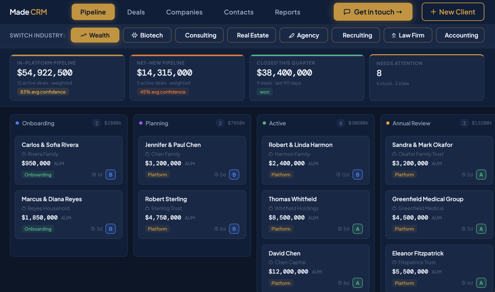
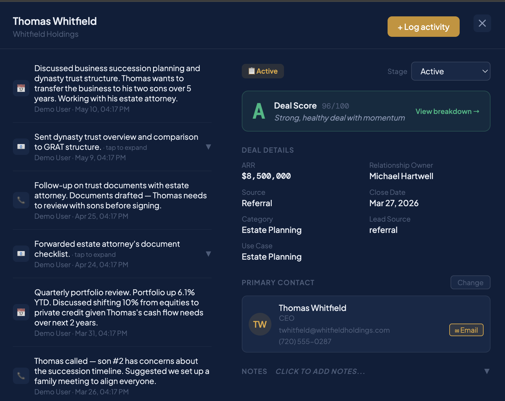
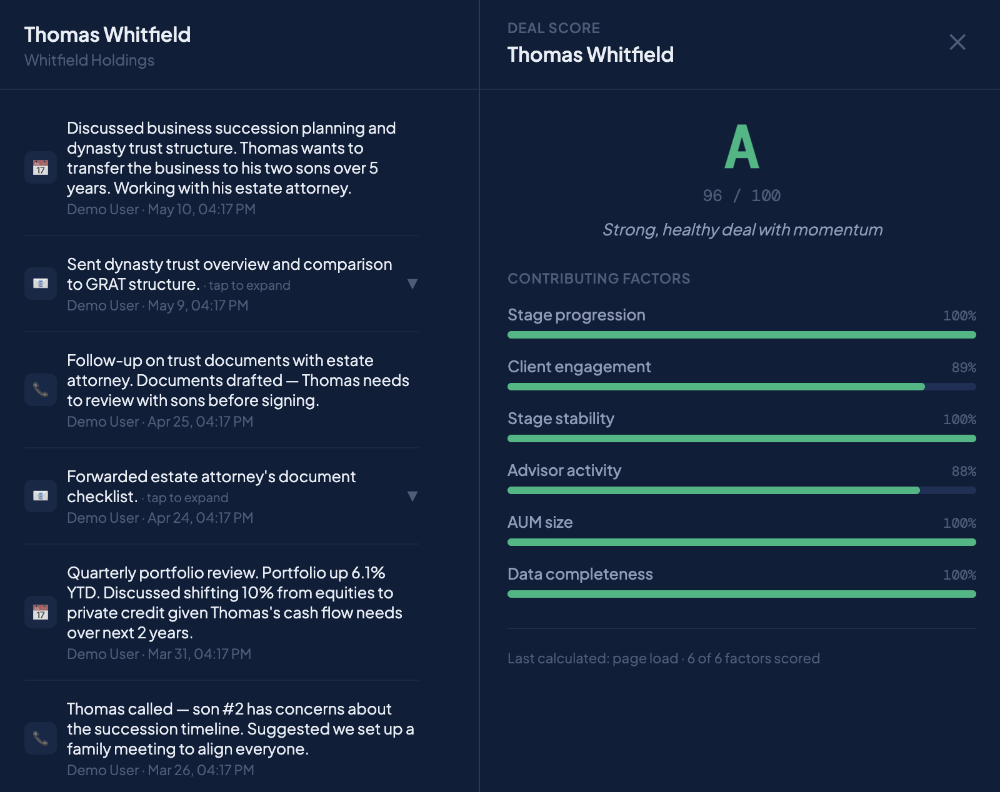
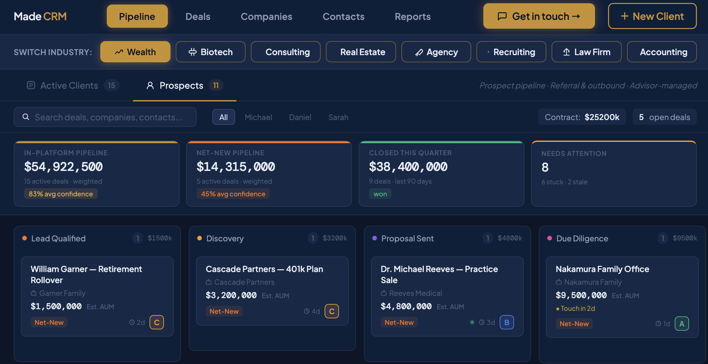
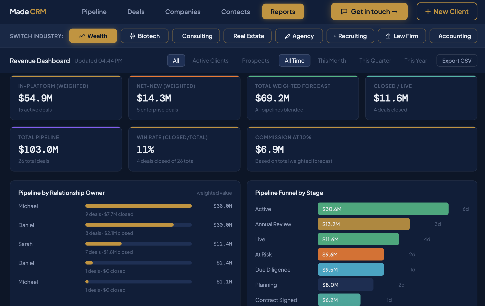
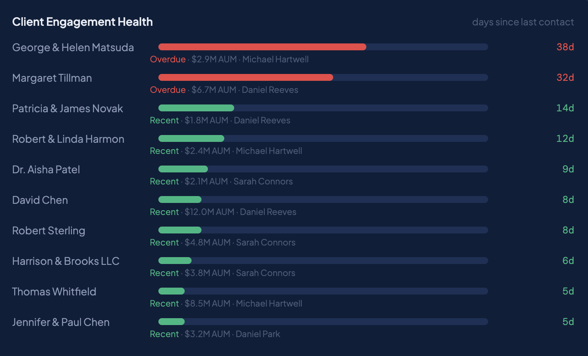

A complete look at what Made CRM does — pipeline forecasting, full client history, multi-industry support, and reports that actually move the business forward.
Most CRMs show you what's in the pipeline. Made CRM shows you what's at risk, what's stuck, and what's actually likely to close — without setup, without configuration, without a Salesforce admin.


For relationship businesses, context is the product. Made CRM keeps every call, every note, every email logged against the deal — searchable forever, never lost in a Gmail thread.
Every open deal gets a 0–100 score and A–F grade based on six weighted factors. No black box. Click any score for the full breakdown — see exactly why a deal is rated where it is, and what's pulling it up or down.

Existing clients and net-new prospects live different lives — different cycles, different touchpoints, different metrics. Made CRM separates them where it matters and rolls them up where it counts.

The same Made CRM, with the data model, terminology, and stages built around how your industry actually runs. Try any of the eight in the live demo — no signup.
The reports dashboard is built for the person who actually has to answer "how are we doing this quarter?" — not for a finance team to slice in a separate BI tool.


For relationship-driven businesses — RIAs, law firms, recruiting shops — the deals you lose aren't the ones you fight for. They're the ones you forgot about. Engagement Health surfaces them while there's still time to act.
Eight industries, real data, fully populated pipelines and reports. No signup, no walls. Click around for two minutes and you'll know whether Made CRM is for your team.